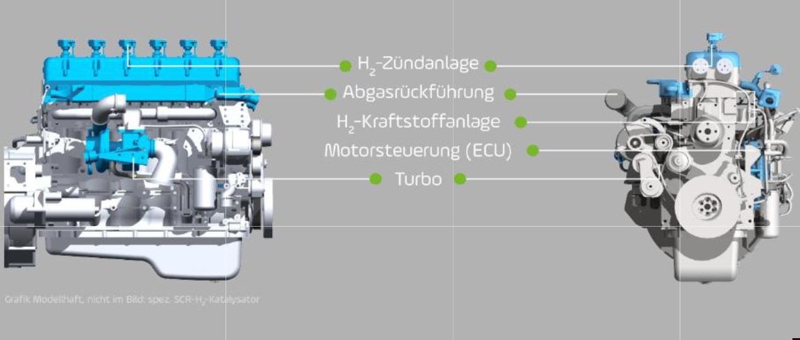

Der Wasserstoff-Verbrennungsmotor
Aus der Facharbeit von Luis Ternes.
Mit Grünem Wasserstoff soll u.a. aus Gründen der Ressourcendiversifizierung der Wasserstoff-Verbrennungsmotor betrieben werden. Bei der Verbrennung von Wasserstoff entsteht kein CO2, sondern lediglich Stickoxide, die jedoch mit Hilfe von AdBlue gereinigt werden können. Auch haben wir hier kein Mengenproblem, wenn wir die Größe Wasserstoff, wie hier gezeigt, in industrieller Größe produzieren. Um herkömmliche Verbrennungsmotoren mit Grünem Wasserstoff betreiben zu können, sind lediglich einige Modifikationen erforderlich:
Auf dem Schaubild unten sind die notwendigen Umbauten am Dieselmotor dargestellt:

"Aufgrund der sehr unterschiedlichen Brenneigenschaften im Vergleich
Wasserstoff zu Diesel muss man für die Gemischbildung und das
Brennverfahren andere Hardwarekomponenten und eine andere Software
einsetzen."
(Zitat: Thomas Korn, Fa. Keyou, mdr.de)
Zudem hat der Wasserstoff-Verbrennungsmotor einen Wirkungsgrad von
44,5%. Im Vergleich hierzu liegt der Wirkungsgrad eines herkömmlichen
Dieselmotors lediglich zwischen 30% und 40%, der eines Ottomotors nur
bei 25% bis 30%.
Eine der Firmen in der Wasserstoffforschung, wie die Keyou GmbH oder die Deutz AG, gab uns einige Informationen zur aktuellen Entwicklung des Wasserstoff-Verbrennungsmotors. Schon jetzt sehen sie im Wasserstoff-Verbrennungsmotor eine Chance für die Zukunft, da er ein hocheffizienter Verbrennungsmotor ist. Ziel unserer Kampagne "Hydrogen for Future" ist es die Bevölkerung bis 2040 komplett von den fossilen Brennstoffen unabhängig zu machen. Grüner Wasserstoff ist ein effizienter, klimaneutraler und ressourcenschonender Energieträger für die Zukunft. Bis die Wasserstoffnutzung aber ähnlich komfortabel wie die Rohölnutzung ist, wird noch einige Zeit vergehen. Die Infrastruktur (Wasserstofftankstellen) muss ausgebaut werden, analog zum derzeitigen Ausbau der Elektromobilität (Akkumulator, Brennstoffzelle).
Wie wir auf unserer Homepage ausgeführt haben, gibt es kein Mengenproblem.